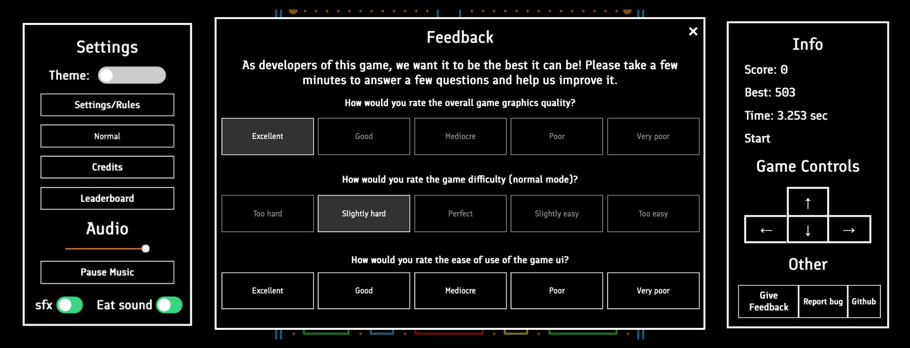
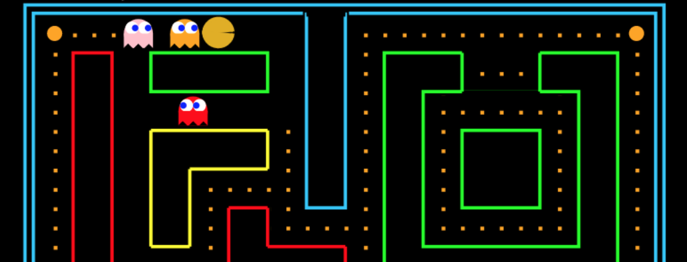
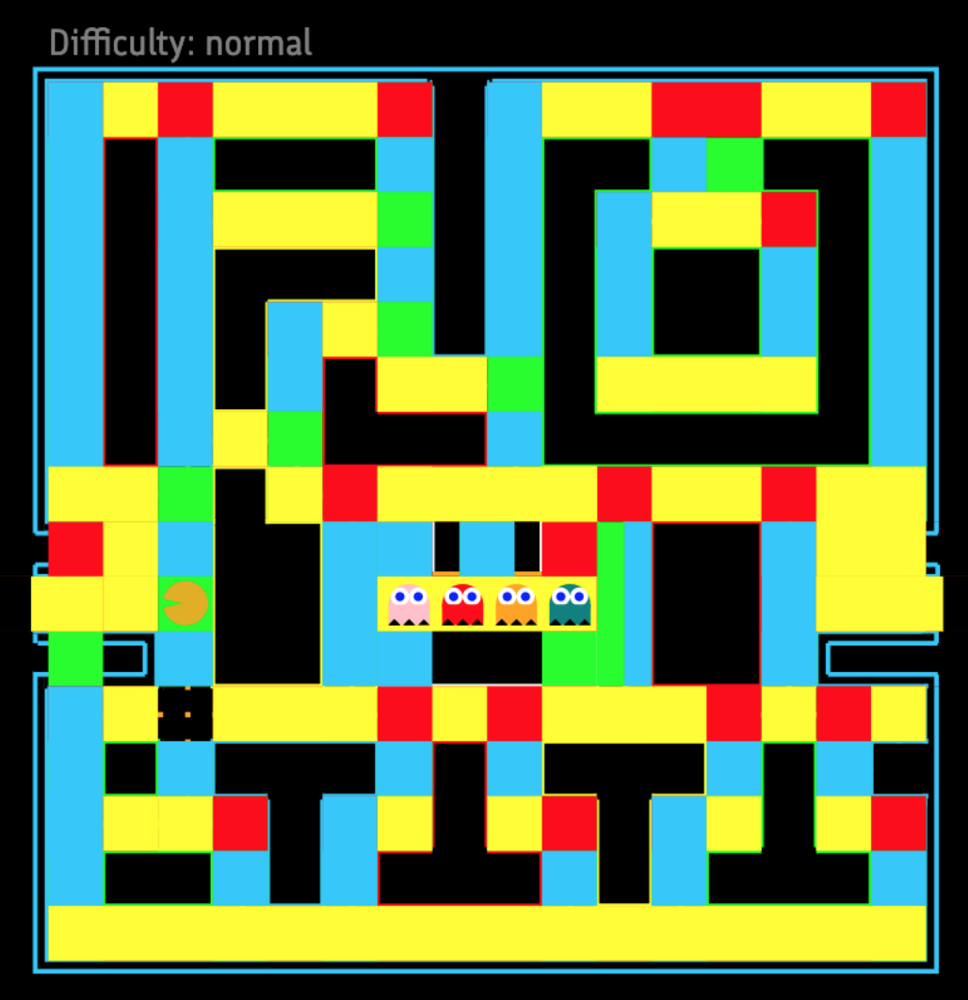

Nine developers came together and wrote thousands of lines of code in three languages
to make this extrordinary product reality. Powering brilliant frontend graphics and UI,
software preforms millions of computations per second. Created with HTML canvas graphics
and ui elements, CSS styling, JavaScript processing, and database with Deta and Github API.
The result is a feature rich, high resolution game like no other.
The result is a feature rich, high resolution game like no other.
spacer
The Base

uis for pacman
The Base. What is this game built on? It's built on a HTML base that contatins everything that the game needs to run except for the graphics. Theme switches and setting controls change preferences, an info panel displays current score, best, and time, and game controls allow users to play the game. But that's just the frontend. To execute the actions called for by these settings, javascript manages clicks, switch activations, and updating of displays. The rules and contributor buttons open up dialogues, and the theme, level, and audio settings interally change preferences. Every iteration, the user's score and time are updated, and If a user activated game control buttons, a keypress is stimulated, so the game perform an action as if the corresponding key has been pressed. Other UI elements, such as buttons to see leaderboard and report a bug are links. Clicking the feedback button opens a whole sub ui, similar to settings and credits uis, but more comprehensive, and internally scrollable.
Graphics basics

graphics for pacman
When starting a brand new canvas project, the most basic elements must be done first. In this case, they would be controlling of the pacman character itself, something virtually everything else is dependent on. The fundamentals are pretty simple. Store x and y coordinates of the pacman, and the x and y direction vectors in variables. Update the positions based on the directions, as long as the pacman remains within the allowed bounderies, and modify the directions on each keypress. The canvas graphics must be cleared and the pacman rerendered on each iteration. In addidtion the the pacman, one of the easiest and most basic elements is the background, which is created with canvas. Using fillRect and drawline methods, game map is drawn is drawn. The points are hard coded(in a unit directly proportional of window size), so the graphics is scaled to fill the user's display, always providing a full height graphics display game.
When the game is initally started (upon load and initial execution of javascript), the height of the game is used to compute a factor directly proportional to the height of the browser window. The game is also split into grid based on boardsize, so that the pacman width and height can be calculated, as well as the width of each lane in the maze. To do this, each gridlength is calulated by 2*((height)/(boardSize*2.2)), where height is the window.innerheight and boardSize is the amount of squares in grid (in other words, the maze is boardSize x boardSize units). When rendering, the hardcoded grid points are scaled to the user's display by being multiplied by this factor, which creates a full height display. The pacman radius is also scaled by this, as is the text, and end screen size and positions.
Game operation fundamentals
After all the graphics and pacman movements are set up, one of the fundamental rules of the game needs to be adressed: satying within allowed bounderies. This is relatively simple when broken down into components. At a given point, The pacman can be in a state where it cannot move left, or cannot move right, or up or down. These can be denoted by 'blocks'. We can define these by hardcoding the grid coordinates(some units in x and some units in y), and then scaling these up to the actual board using the factor mentioned previously. At any point during the play, we can check if the pacman is within the block coordinates, and if so, prevent movement or not implement requested turns. Reversely, If a turn is requested and is wating to be implemented, if the pacman is in a position not blocked for the certain direction, the turn is executed. If a pacman is in a position where its current direction is blocked, then it will reject forward moves and remain stationary.

Pacman directional blocks
In the above diagram, areas highlighted in yellow are locations where the pacman is blocked from moving downwards, blue is for left, green is for right, and red is for up(all blocks are not shown for every position, as some blocks overlap with others). Using this technique, a fairly complex algorithm of having the pacman check its position with a list of maze bounderies in 4 directions becomes simplified into 4 function calls to array checkers. This method not only simplifies pacman border control, but also is usable for ghost navigation, and ghost returning to to ghost box algorithms.